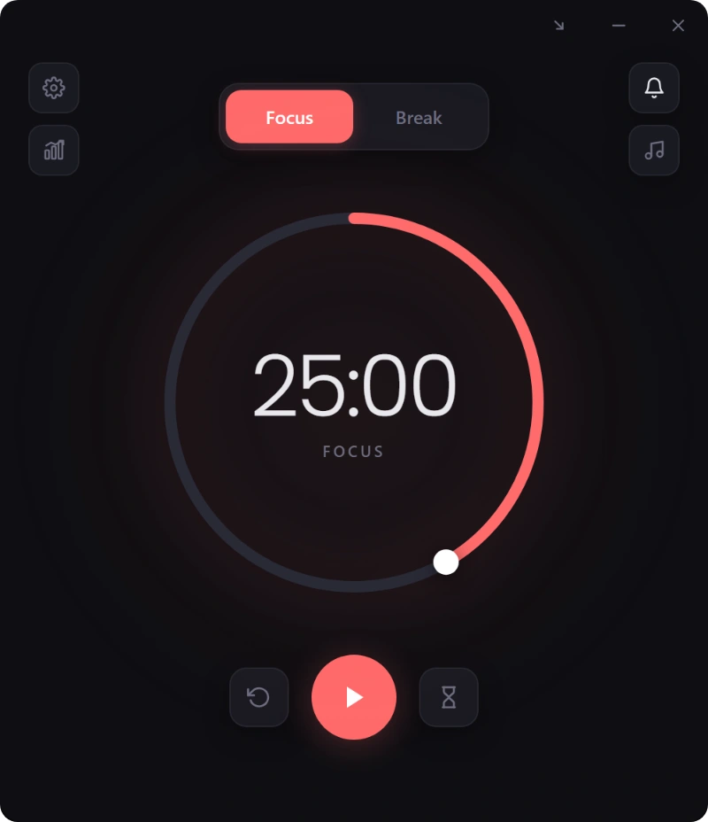

Focus timer for Windows
Make time
for focus.
Set a session, put on some rain and keep the timer beside your notes. Take a break when the ring runs out.
Free · Windows 10 & 11 · 64-bit

Mini Mode
Less window.
More workspace.
Shrink the timer to its essentials. It stays on top of your PDF, problem set or notes, with the clock and playback controls within reach.

Inside the app
Your study
routine.
Your sessions and preferences stay on your PC. Sign in with Google if you want to sync them across devices.
Statistics
See where the hours went.
Look back over a week, a month or a year. Your chart follows the time you spent focusing.

Sound
Find your study sound.
Set the rain, brown noise or one of seven other ambiences behind your timer. Adjust the alarm volume separately.

Appearance
Give each phase its own colour.
Choose a light or dark window and set the colours for focus and breaks independently.